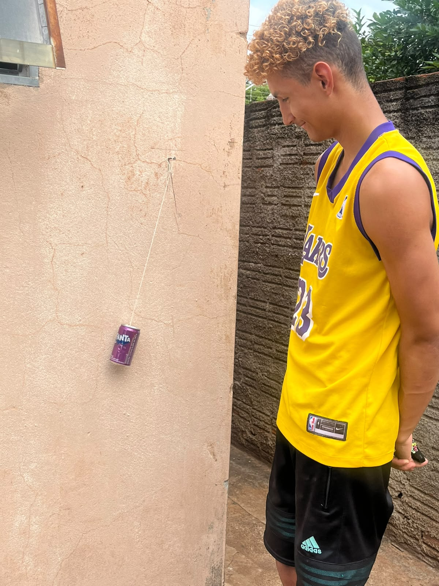

PROJETO EXPERIMENTAL • FÍSICA
PÊNDULO
PÊNDULO
SIMPLES
Investigação experimental do período de oscilação, analisando o comprimento do fio, a massa suspensa e a amplitude angular inicial.
2026IFMS • TRÊS LAGOASINFORMÁTICA
O que foi investigado?
O experimento analisa se o comprimento do fio, a massa do corpo suspenso e a amplitude angular inicial afetam o período de oscilação de um pêndulo simples.
Realização do Experimento

NAVEGUE PELO PROJETO
Conheça cada etapa
01
Introdução
Questão investigativa e apresentação do experimento.
02Fundamentação Teórica
Conceitos físicos e equação do período.
03Arranjo & Materiais
Montagem e instrumentos utilizados.
04Procedimento
Variáveis e etapas da coleta de dados.
05Dados Experimentais
Tabelas e medições realizadas.
06Análise Gráfica
Relações entre período, comprimento e gravidade.
07Resultados
Discussão e interpretação dos resultados.
08Conclusão
Conclusões obtidas no experimento.
Período do pêndulo
T = 2π √(L / g)
O período depende do comprimento do fio e da gravidade local.
Nossa Equipe
Integrantes
ANNA BEATRIZ DOS SANTOS BELCHIOR
EMILLY KAROLAYNE MOREIRA DE SOUZA
ISABELE PRADO SOUZA
VINICIUS ANTUNES DA COSTA FILHO